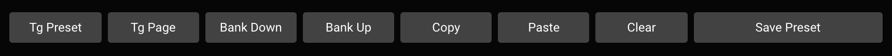
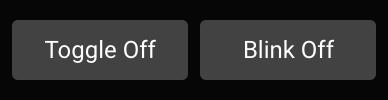
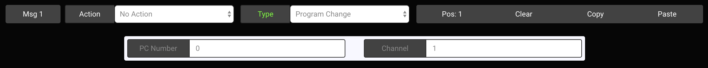

Midi Editor
Using the Web/Desktop Editor with your MC6 MKII
Besides using the on-board MIDI editing features on the MC6 MKII, you can also edit your settings via the Web/Desktop editor. The Web Editor will always contain the latest developments, while the Desktop editor will be updated less frequently.
The links are available on our website here: https://www.morningstarfx.com/editor
NOTE: A number of functions are disabled when the device is in Editor mode. When using or testing the MC6 with other devices, please remember to toggle out of editor mode.
Connecting the device
Connect the device via USB to your computer and launch the editor in the latest version of Google Chrome (the Web Editor works on Google Chrome only).
The editor should detect your device and load the editing dashboard as shown below.

Your device will have to be in Editor Mode for it to communicate with the editor. You can toggle into editor mode by pressing Switch [C + D] or by pressing the button below the logo on the editor [Toggle Editor Mode].
Once your controller is in editor mode, the Model button will turn Blue, indicating that it is communicating with your controller. You can then press any switch on your device to edit the corresponding preset. To edit your expression pedal, move the pedal and the settings will be loaded on the editor.

The editing parameters are similar to the on-board editing parameters.
Editing Functions
There are various controls on the top right panel of the editor (below the Bank and Preset number display) as well. You can toggle the page on the MC6, Bank up or down or copy and paste presets. You can also clear your preset settings by double clicking the Clear button. This also applies to the Clear button on the individual Messages, where the Clear button has to be double clicked.
Device Control Functions

- Tg Preset: Toggles the Preset between Position 1 and Position 2
- Tg Page: Toggles the device page between 1 and 2 to load Preset A - F or G - L
- Bank Up / Bank Down: Bank up and down on the device
- Copy: Copy the Preset
- Paste: Paste the copied preset to a different selected preset
- Clear: Clear the Preset settings. This button has to be double-clicked
- Save Preset: Save the settings on the Editor to the device
$## Preset Editing Options

-
Toggle On/Off: Determines whether the preset should toggle it's toggle position each time it is engaged.
-
Blink On/Off: Determines whether the preset name should blink when the preset is in toggle position 2.
Message Editing Options

- Pos button: Determines if the message should be in Position 1, Position 2 or Both. For example, if Msg 1 is set to Pos 1, it will only engage when the Preset is in Position 1.
- Clear: Clears the message. This has to be doubled clicked.
- Copy: Copy the message
- Paste: Paste the earlier copied message to another message..